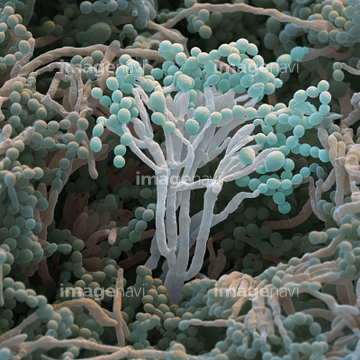

Bacteriën
Bacteriën zijn een van de vier ziekteverwekkers die we kennen. Bacteriën zijn erg klein en zijn ongeveer 1 µm groot. De binnenkant van een bacterie bestaat uit ribosomen, één kringvormige chromosoom en een plasmide. De chromosoom is het DNA-molecuul van de bacterie. Het DNA-molecuul bevat erfelijke eigenschappen van de bacterie. (Gommers, 2019). Bacteriën planten zich ongeslachtelijk voort, door deling. Wanneer bacteriën in een organismen binnendringen beginnen ze zich snel te delen door de gunstige omgeving van de gastheer. Het afweersysteem van de gastheer kan tegen de bacteriën vechten door het maken van antistoffen of activering van afweercellen, witte bloedcellen. Als je afweersysteem wint van de bacteriën dan krijgt de gastheer ook geen ziekteverschijnselen. Zodra de bacteriën in meerderheid zijn of resistent zijn tegen het afweersysteem van de gastheer, winnen de bacteriën de strijd en wordt de gastheer ziek. (NEMO, 2018).
Virussen
Een virus is de tweede meest voorkomende ziekteverwekkers. Een virus is erg klein (kleiner dan een bacterie zelfs). Virussen zijn geen organismen en hebben dan ook geen cellen met organellen erin. Een virus bestaat voor een grote deel uit erfelijk materiaal, die DNA of RNA wordt genoemd. Om dit erfelijk materiaal zit een eiwitmantel die capside wordt genoemd. Om al deze capsiden met erfelijk materiaal erin zit nog een eiwit laag die ervoor zorgt dat deze capsiden bij elkaar blijven. (Gommers, 2019).
Als een virus wilt voortplanten heeft het virus gastheercellen nodig. Deze gastheercellen zijn afkomstig van een gastheer dit kan een bacterie, planten, dieren en/of mensen zijn. Zodra een virus hecht aan een gastheercel, dringt het erfelijk materiaal van het virus de gastheercel binnen. Het erfelijke materiaal van het virus komt in het cytoplasma te liggen en met behulp van de enzymen van de gastheercel of van de virus, wordt het erfelijk materiaal van het virus in gekopieerd. Door de ribosomen van van het gastheercel worden er nieuwe capsiden gesynthetiseerd. Door dit proces ontstaan er grote aantallen nieuwe virussen en valt de gastheercel uiteen. Tijdens het proces dat de virus zijn erfelijke materiaal in grote aantallen kopieert, zijn er een paar mutatie van het virus ontstaan die zich het best aangepast zijn aan het milieu en makkelijker kunnen verspreiden. Doordat de gastheercellen uiteen vallen, wordt het immuunsysteem verzwakt en wordt de gastheer ziek door het virus. (Universiteit van Nederland, 2020).
Schimmels
Een derde ziekteverwekker is de schimmel. Meercellige schimmels zijn opgebouwd uit hyfen (lange schimmeldraden). Een schimmel bestaat uit een of meer mycelia (meerderde hyfen). Schimmels zijn wel organismen met organellen in tegenstelling tot het virus. Meercellige schimmels kunnen zich ongeslachtelijk of geslachtelijk voortplanten. Als een meercellige schimmel zich geslachtelijk voortplant, doet die dat dus door spore. Eerst moeten twee hyfen uit twee verschillende mycelia in aanraking komen. Er komt dan één kern uit de ene mycelia bij de andere kern uit de andere mycelia. Er ontstaat een cel met twee kernen in. Verder ontstaan er grote aantallen hyfen met tweekernige cellen. Direct daarna vindt er meiose plaats in de zygote. Met als eindresultaat haploïde spore. (Gommers, 2019).
Wanneer de spore van de schimmel rijp zijn, laten ze los en komen in de lucht terecht. De sporen zijn op zoek naar een gunstige omgeving. Bij een juiste temperatuur, luchtvochtigheid en voldoende voedsel groeit er een schimmel. Wanneer de spore op en/of in de gastheer terecht komt en de omstandigheden zijn gunstig kan hier een schimmel groeien. Schimmels kunnen gifstoffen (mycotoxines) maken bij de juiste luchtvochtigheid en temperatuur. Mycotoxines kunnen schadelijk zijn voor de gastheer. Sommige Mycotoxines kunnen schadelijk zijn alleen voor mensen en niet voor andere organismen. Er zijn ook Mycotoxines die niet schadelijk zijn voor mensen, maar juist voor andere organismen. Wanneer er grote hoeveelheden van deze gifstoffen worden gemaakt in en/of op de gastheer kan de gastheer van de schimmel ziek worden. (Nationaal Farmaceutisch Museum, 2022).
Parasieten
Parasieten zijn net als de bacteriën, virussen en schimmels ook ziekteverwekkers. Parasieten zijn als het ware hele kleine organismen die leven door een gastheer. Parasieten gaan op of in een organismen van een ander soort zitten en onttrekken ze zijn voedsel. Parasieten beginnen dan samen te leven met de gastheer. De kans dat een gastheer door een parasiet ziek wordt is klein, omdat het afweersysteem van de gastheer gelijk in actie komt tegen parasieten. (Gommers, 2019). Als parasieten resistent zijn tegen het afweersysteem en/of dieper in de lichaam van de gastheer gaan kan de gastheer infecties krijgen. De ene parasiet doorboort als het ware de ingewanden en de ander parasiet zorgt voor dat de gastheer minder voedingstoffen binnen krijgt. Een ander manier hoe een parasiet zijn gastheer ziek maakt is, doordat de parasiet zelf geïnfecteerd is door een bacterie of virus en deze uitspuugt in het bloed van de gastheer. De gastheer wordt dan verder ziek gemaakt door het virus of de bacterie. (LUMC, 2022).

Literatuurlijst
-
Gommers, M e.a. (2019). Biologie voor jou. Malmberg
- LUMC (2022)
- Nationaal Farmaceutisch Museum (2022)
- NEMO (2018)
- Universiteit van Nederland (2020)